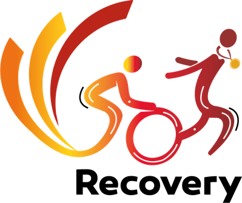

Biblioteca de guías
Muévete mejor, a tu ritmo
Guías y ejercicios del equipo de fisioterapia de Recovery. Cada una nace de un video de nuestro Instagram: comenta la palabra clave y te la enviamos por mensaje.
1Mira el video
2Comenta la palabra
3Recibe tu guía
NuevaInteractivaTENDÓN
Rendimiento Blindado: 3 ejercicios para tu rodilla
Tendón rotuliano y cuadricipital. Videos, ritmo, temporizador y control de series.
Abrir la guía →PDFZona lumbar y cadera
Top 5 ejercicios para tu recuperación
Basculación pélvica, bird dog, almeja, puente corto y step-up, paso a paso.
Descargar PDF →En preparaciónESPALDA
Pausas activas para la oficina
5 pausas de 2 minutos para tu espalda, y las señales para pedir una valoración.
Recovery · Fisioterapia
¿Necesitas un plan hecho para ti?
Valoramos tu caso y ajustamos ejercicios, carga y tecnología a tu etapa de recuperación.
Escribir a Recovery